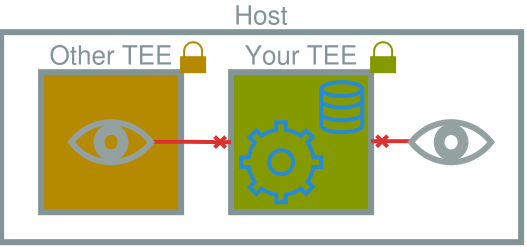
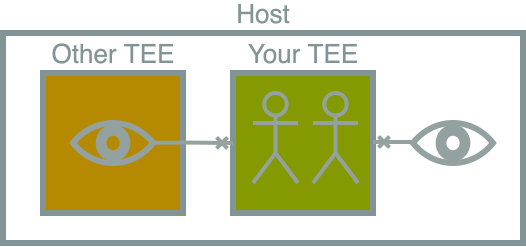
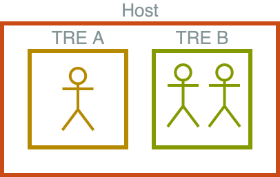
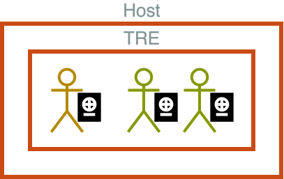
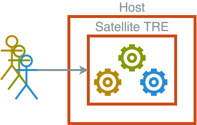

When to use TEEs for TREs
Security Trade Off
Why not all the security all the time?
Security Trade Off
Some Theory
Attack surface
Trusted compute base
Social engineering and non-technical vulnerabilities
Security Trade Off
There is a cost to introducing security
- Deployment
- Upkeep
- Increased complexity
Security Trade Off
When not to add more
- The cost outweighs the benefit
- Overlaps with existing controls
However, independent controls for the same vulnerability make systems more robust
A Refresher
Trusted Research Environments

Secure computational environments which enable research on sensitive data. They contain tools to improve research speed and quality as well as controls for access, and data release.
A Refresher
Trusted Execution Environments

With a Trusted Execution Environment (TEE), you can use a computer in a way that is private from other users, even the owner of that computer. Works through encrypting data in use.
TEEs for TREs
What a TEE protects against

TEEs for TREs
What a TEE doesn't protect against

Social engineering attacks
TEEs for TREs
The cost of TEEs
- Requires recent CPUs
- Must attest all TEEs
- An attestation policy must be created and maintained
TRE scenarios
Hosting and Shared Responsibility
Self-hosted or third party hosting
- SAIL Databank, hosted and operated on-premises by Swansea University
- A FRIDGE instance, operated by The Turing, hosted by Cambridge University
- A Data Safe Haven instance, operated by The Turing, hosted on The Turing's Azure tenant
- OpenSAFELY, operated by the Bennett Institute, distributed on the cloud and safe havens
TRE scenarios
Isolated Workspace

TRE scenarios
User-level Controls

TRE scenarios
Satellite Runner

A Proposal
Variables
- Who controls the host?
- Trust in the host or host admins
-
TRE design
- Do users/projects need to be isolated?
- What is the model for multi-user/tenancy?
A Proposal
IETF RFC 2119
The key words "MUST", "MUST NOT", "REQUIRED", "SHALL", "SHALL NOT", "SHOULD", "SHOULD NOT", "RECOMMENDED", "MAY", and "OPTIONAL" in this document are to be interpreted as described in RFC 2119.
A Proposal
Use a TEE as part of your TRE when,
-
you require strong isolation from the host
for example when the host is not the TRE operator
-
you require strong isolation between jobs
for example when data access is managed at the user level or multiple projects share compute
-
you are handling highly sensitive data
where the risk justifies maximising security, for example danger to safety or life